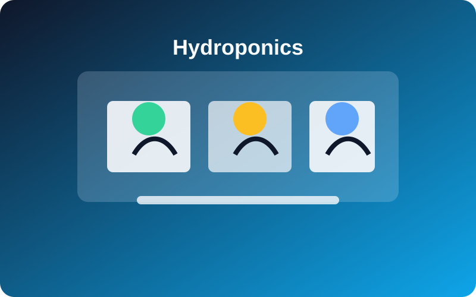
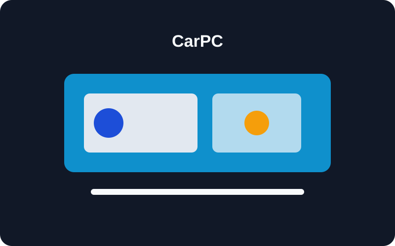
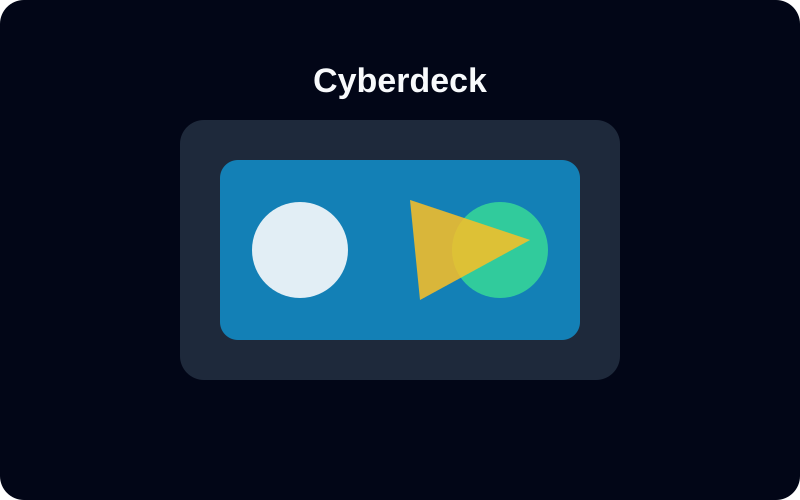
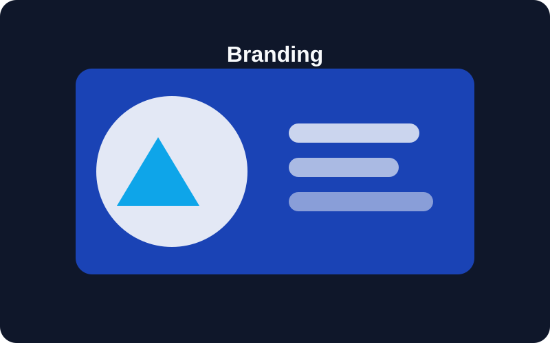

Bridging hardware and software to build practical, automated solutions—from ESP32 microcontrollers to automotive diagnostics.

Designed a dual-zone automated regulation system for cucumbers and common beans. Integrated sensors for pH, EC, temperature, and humidity, housed in custom 3D-printed enclosures.

Adapted Dell OptiPlex hardware for Android Auto dashboard integration. Evaluated and integrated OBD2 scanning tools for real-time vehicle diagnostics.

Explored low-power computing and custom active cooling solutions using single-board computers like Raspberry Pi and Orange Pi for portable tech builds.

Developed digital branding, created logos, and generated promotional video scripts and subtitle files for an auto body repair and restoration service.
I am a Computer Engineer based in Pangil, Laguna, driven by the challenge of building practical, automated systems. From embedded devices to hardware prototypes, I enjoy turning ideas into working solutions that solve real problems.
My work combines hands-on hardware tinkering, system thinking, and a strong interest in practical automation. I’m especially motivated by projects that connect electronics, software, and everyday usability.